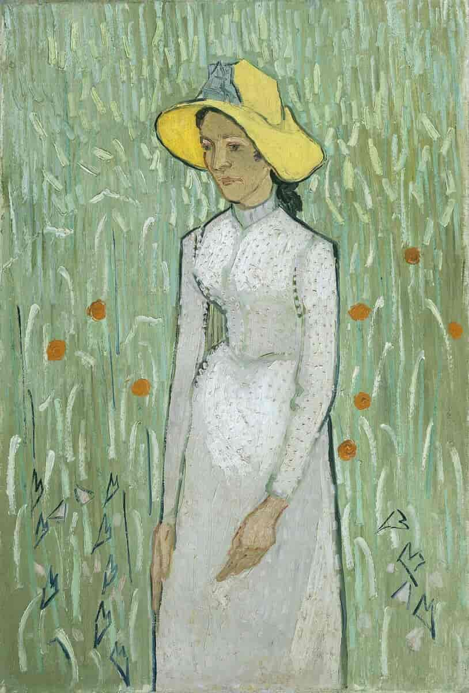

Iriser, 1889
Selvportrett med bandasjert øre, 1889
Selvportrett, 1887

Stjernenatt, 1889
Mandelblomst, 1890

En oiransk kurisane, 1887
Jente i hvitt, 1890
Morbærtre, 1889
Paul Gachet, 1890
Potetspiserne, 1885
Ravner over kornåker, 1890
Såmannen, 1888
Selvportrett, 1880
Skurkaren, 1889

Selvportrett, 1887
Fjerde versjon av Solsikker, 1889
Selvportrett, 1887
Soverom i Arles, 1889
Selvportrett, 1889